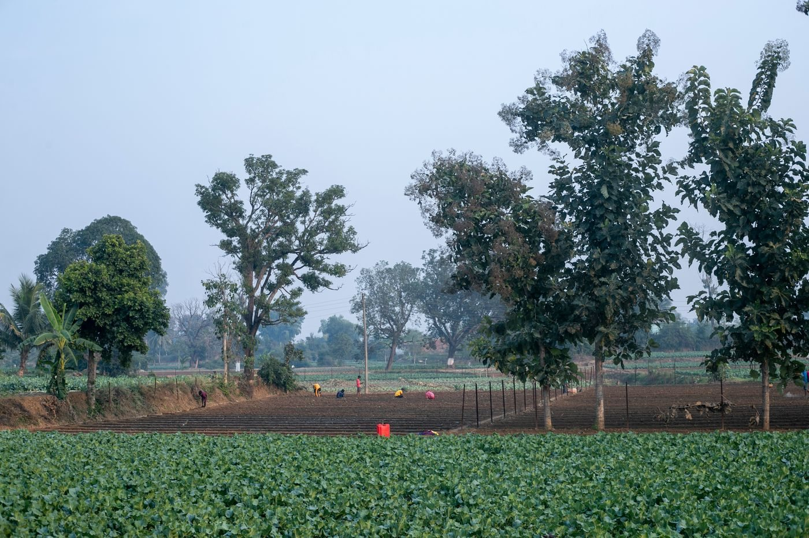

Collective progress
Participation, a shared voice, and a belief in moving forward together.
01 / Our story
A co-operative vision built around dairy development, farming communities, and the possibilities we can explore together.

Purpose before everything
Surabhi Multi State Co-operative Dairy Society Ltd. is a multi-state co-operative society with a registered operational scope across Kerala and Tamil Nadu. Its focus brings dairy-sector development and farmer welfare into one institutional vision.
The society’s objectives encompass milk production and processing, animal healthcare, nutrition, breeding support, research, education, and training. These describe the intended scope of the organization; they are not a list of confirmed operating services.
Support dairy-sector development and farming communities through co-operation, practical knowledge, and responsible exploration of new opportunities.
A connected rural landscape in which farmers, animal welfare, technology, and local resources are considered together. This is a statement of ambition, not a claim of achieved outcomes.
Our development objectives
Dairy farming, farmer welfare, and relevant modern dairy technologies.
Milk collection, chilling, processing, distribution, and product development.
Animal health, nutrition, cattle-feed development, and breeding support.
Research, education, training, and veterinary infrastructure development.
Farmer support and facilitation of relevant government schemes.

What guides us
Participation, a shared voice, and a belief in moving forward together.
Considering local needs, appropriate technology, and the resources that sustain us.
Keeping the long term in view, with care for the next generation.
05 / Our journey
Every shared future begins with a first step.
Ours is a story still being written.
Society registration dated 12 October 2023, as stated in the client brief.
A focus on dairy-sector development, farmer welfare, and relevant modern technologies.
Ideas across renewable energy, rural tourism, and animal healthcare, subject to feasibility and approvals.
A shared ambition for sustainable development and lasting opportunities for farming communities.
Built on institutional foundations
Leadership information, governance details, and official documents will be published after verification.
Leadership & governanceA place for verified institutional information.
Official documentsThere is more we can grow
People. Purpose. Possibility.Discover the possibilities of co-operation, innovation, and sustainable development.
Get in touch